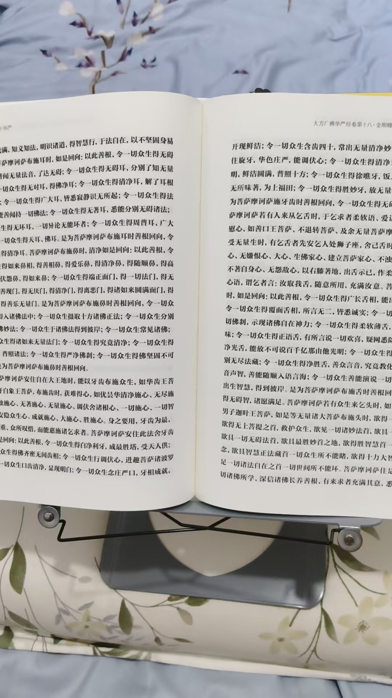

20260906楞严经，重点读，五根，六识，七大圆通
修炼修行符咒术法大佛顶，首楞严
不开悟，以后的经都没用
楞严经，重点读，五根，六识，七大圆通
就是每个菩萨说开悟的方法
四十华严，读到最后，有泪在目
心有所感
六十华严，第一本读到一半，热泪盈眶

至宝啊
不读华严，枉活一生
一切法，一切术，都在华严经
出现一个景象，
我年龄很大，胡须有十几厘米，白发白眉白胡子，含着眼泪，说，这么好的经，你们快读一下吧
对面，很多人，开始是平常人，一脸茫然
外边是修为的白亮人
白亮人越聚越多
再外是慧人
金光法身
再外是菩萨，佛
带着童男童女，凌空而来
看远处，来的无数无量无边
回头看，我打坐在一个台子中心，在讲
有声有色
是那个老者我
读八十华严，绝对流泪
预见到，八十华严，能让我彻底开悟，大彻大悟
@紫鸢真人 [爱心][爱心][666]
第一印，菩提心印
立大志，发大愿
上求佛道，下化众生
此印为密宗一万六千手印中，众印之王